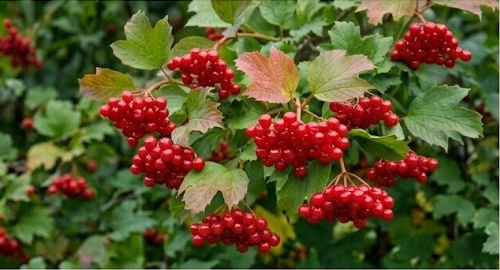

Кущ калини біля материної хати — це не лише окраса, а й символ України, наш духовний світ, наша спадщина. Якщо троянди й виноград, за влучним висловом Максима Рильського, символізують красиве й корисне, то кущ калини, увібравши обидві ознаки, опредметнює й духовний потяг до своєї землі, свого оберега, своїх традицій.